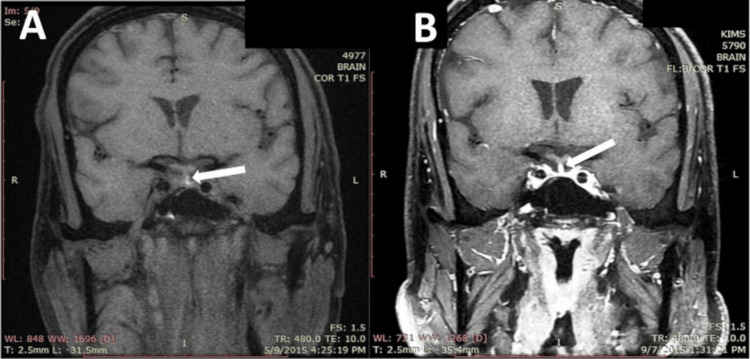
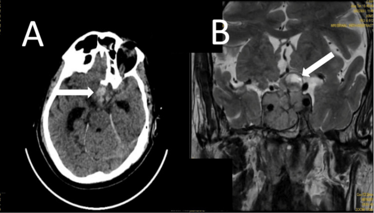
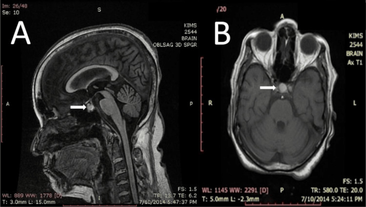
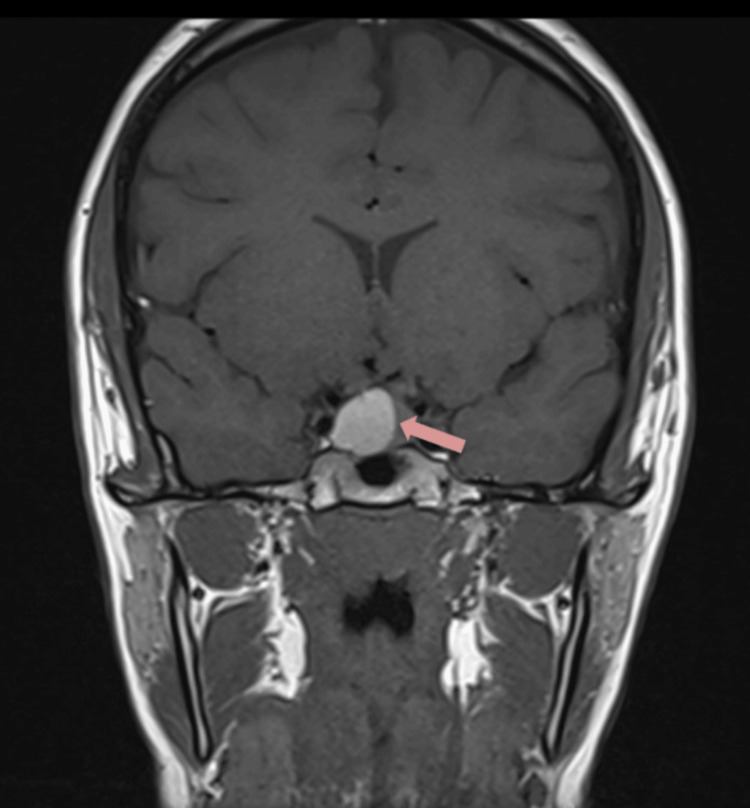

245 — U tuyến yên chảy máu/nhồi máu (pituitary apoplexy) & suy tuyến yên cấp / Pituitary apoplexy & acute hypopituitarism
Tags: pattern:dot-quy-tuyen-yen pattern:khoi-yen pattern:suy-tuyen-yen-cap vung:giao-thoa score:PAS protocol:MRI-yen protocol:CT-so-nao
Mức chắc chắn (certainty): tổng hợp y văn (literature synthesis) — số liệu từ bài tổng quan có bản toàn văn mở (PMC4263799, PMC11084238), cohort 98 bệnh nhân (PMC13221369), meta-analysis thời điểm mổ (PMC11614942) và registry tái phát (PMC13033880); các ca trong quiz là ca nguyên văn giữ đúng tuổi – bối cảnh – chú thích gốc.
Câu chốt cấp cứu: đau đầu dữ đột ngột + sụp thị trường/thị lực hoặc liệt vận nhãn ở người có khối vùng yên = đột quỵ tuyến yên cho tới khi loại trừ. Hydrocortisone tĩnh mạch NGAY (trước khi có kết quả cortisol), rồi MRI tuyến yên — CT âm không loại trừ.
1. Tổng quan bệnh học – cơ chế hình ảnh (TẠI SAO)
- Đột quỵ tuyến yên (pituitary apoplexy, PA) là hội chứng cấp do chảy máu và/hoặc nhồi máu trong tuyến yên, thường trên nền một u tuyến yên (PitNET). Cơ chế được chấp nhận: u phát triển vượt cấp máu → hoại tử thiếu máu trung tâm → vỡ mạch và chảy máu trong u; khối căng trong hố yên hẹp gây chèn ép giao thoa thị và các dây thần kinh trong xoang hang.
- Tần suất: PA gặp ở 1,6–2,8% bệnh nhân u tuyến yên (PMC4263799); ước tính 0,17 ca/100.000 người–năm, nam:nữ khoảng 2:1, tuổi hay gặp 50–60 (PMC11084238). Khoảng 60% bệnh nhân không biết mình có u trước biến cố (PMC4263799).
- Yếu tố thúc đẩy: u không chức năng (OR 1,93), nam (OR 2,57), tăng huyết áp (OR 2,53) (PMC13008675); thuốc đồng vận dopamine (cabergoline), chống đông/chống kết tập tiểu cầu, phẫu thuật lớn, thai kỳ, test kích thích tuyến yên, xạ trị (PMC11084238).
- TẠI SAO CT dễ bỏ sót: máu tụ cấp đặc 60–80 HU, nhưng hố yên nhỏ và lát cắt dày làm thể tích trung bình (partial volume) — độ nhạy CT chỉ 21–46% (PMC4263799); một tổng quan khác ghi CT phát hiện khối yên > 80% nhưng chỉ chẩn đoán PA < 30% (PMC11084238). Vì vậy CT bình thường không loại trừ PA.
- TẠI SAO MRI là chốt: độ nhạy MRI 88–90% (PMC4263799). Tín hiệu thay đổi theo tuổi máu:
- Cấp 0–7 ngày: deoxyhemoglobin → T2 tối, T1 đồng/giảm nhẹ tín hiệu.
- Bán cấp 7–21 ngày: methemoglobin nội bào → T1 sáng, T2 sáng — đây là lý do T1 tăng tín hiệu là dấu hiệu MRI thường gặp nhất của PA.
- Mạn > 21 ngày: hemosiderin/ferritin → T1 và T2 đều tối.
- Mức dịch–dịch (fluid–fluid level) trong khối và blooming trên SWI/T2* giúp phân biệt máu với nang giàu protein/mucin.
- TẠI SAO suy thượng thận cấp nguy hiểm: cortisol thấp làm giảm đáp ứng mạch với catecholamine → tụt huyết áp, choáng; đồng thời tăng tiết ADH → hạ natri máu (PMC11084238). Vì aldosterone còn phụ thuộc hệ renin–angiotensin, tăng kali máu không điển hình — khác suy thượng thận nguyên phát.
- Số liệu nội tiết tại chẩn đoán (cohort 98 BN): gần 80% có suy ít nhất một trục; giảm cortisol 55,6%, giảm giáp 64,4%, giảm sinh dục 55,6%, thiếu ADH 4,4% (PMC13221369). Các tỷ lệ cộng > 100% vì một bệnh nhân có thể suy nhiều trục. Đái tháo nhạt hiếm vì thùy sau thường được bảo tồn.

Case 1 (67 tuổi): (A) MRI T1 fat-sat vành — ổ tăng tín hiệu ở chỗ nối cuống–tuyến yên, cạnh một vi tuyến giảm tín hiệu 0,6 × 0,7 × 0,8 cm; (B) sau biến cố, hố yên trống trên T1 + Gd. Nguồn: Meher D et al., Cureus 2025 (PMC12718215), Fig. 1, CC BY 4.0.2. Mẫu hình + chẩn đoán phân biệt theo cơ chế & bối cảnh (Gamut)
- Theo cơ chế tổn thương:
- Chảy máu trong u (hemorrhagic apoplexy): hay gặp nhất; CT tăng đậm độ, MRI T1 sáng (bán cấp), mức dịch–dịch.
- Nhồi máu tuyến yên (ischemic apoplexy): T1 đồng/giảm, T2 tăng, có thể hạn chế khuếch tán; bối cảnh tụt huyết áp, sau mổ, sản khoa (Sheehan).
- Hỗn hợp nhồi máu–chảy máu: mô bệnh thường thấy hoại tử + máu; hình ảnh không đồng nhất.
- Theo tổn thương nền:
- PitNET/adenoma (đa số, kể cả vi tuyến — ca 1 chỉ 0,6–0,8 cm).
- Nang Rathke kỵ nước (Rathke cleft cyst) chảy máu: T1 sáng do protein, không có mức dịch–dịch điển hình, bờ nang rõ.
- Craniopharyngioma, u màng não củ yên, di căn, viêm tuyến yên (hypophysitis) — hiếm nhưng vào gamut khối vùng yên (bài 432).
- Sheehan syndrome: hoại tử sau sinh do giảm thể tích/máu; tuyến yên to lan tỏa cấp rồi teo.
- Theo bối cảnh khởi phát: tự phát; do cabergoline (ca 5); do chống đông/phẫu thuật lớn/thai kỳ; sau chấn thương đầu.
- Chẩn đoán phân biệt của đau đầu sét đánh (TCH): SAH, RCVS, CVST, bóc tách động mạch cổ (bài 247), viêm màng não, hạ áp lực nội sọ — xem bài 227.
- Mnemonic vùng yên “SATCHMO”: Sellar adenoma, Apoplexy, Teratoma/germ cell, Craniopharyngioma, Hypophysitis, Meningioma, Other (Rathke cyst, metastasis, aneurysm).
3. Bảng so sánh phân biệt (ma trận đối chiếu)
| Thực thể (entity) | Hình ảnh điển hình | Chốt vào (rule-in) | Chốt loại (rule-out) | Gợi ý xác nhận |
|---|---|---|---|---|
| PA chảy máu | CT: ổ tăng đậm độ trong hố yên; MRI: T1 sáng, T2 không đồng nhất, mức dịch–dịch, blooming SWI | T1 sáng trong khối yên + đau đầu dữ/thị trường xấu đi; máu bán cấp 7–21 ngày | T1 tối hoàn toàn + không có sản phẩm máu → nghĩ nang đơn thuần | MRI tuyến yên lát mỏng + SWI; cortisol/ACTH, FT4, Na |
| PA nhồi máu | T1 đồng/giảm, T2 tăng, DWI hạn chế khuếch tán; tuyến yên to lan tỏa | Bối cảnh tụt huyết áp/sau sinh/sau mổ + suy nhiều trục nội tiết cấp | Khối đặc ngấm đồng nhất, không phù → u không biến chứng | MRI + DWI; xét nghiệm nội tiết; theo dõi |
| Macroadenoma không apoplexy | Khối đặc từ yên, T1 đồng tín hiệu, ngấm đồng nhất, nâng giao thoa | Bán manh thái dương tiến triển chậm + hội chứng nội tiết | Mức dịch–dịch/T1 sáng cấp + đau dữ → đã apoplexy | Nội tiết + thị trường; MRI định kỳ |
| Nang Rathke chảy máu | Nang bờ rõ, T1 sáng do protein, có thể có nốt trong nang; không mức dịch–dịch | T1 sáng nhưng không có mức dịch–dịch, không blooming mạnh | Máu bán cấp có blooming + mức dịch → PA | MRI nhiều chuỗi (T1, T2, SWI, Gd) |
| Sheehan syndrome | Tuyến yên to cấp, sau đó hố yên trống; không có khối u rõ | Sau sinh + mất máu nhiều + không tiết sữa, suy giáp/thượng thận | Có khối u/ổ máu khu trú → PA trên u | MRI sọ; nội tiết; bối cảnh sản khoa |
| SAH/RCVS (TCH) | Máu khoang dưới nhện bể nền 60–80 HU; co mạch “chuỗi hạt” hồi phục | Cứng gáy + máu bể nền (SAH); TCH tái diễn + RCVS2 ≥ 5 | Khối yên có máu trong u, không máu bể nền → PA | CTA/DSA; CTV/MRV; RCVS2 |

Case 5 (49 tuổi, prolactinoma đang dùng cabergoline 0,5 mg/tuần): (A) CT sọ không cản quang — ổ tăng đậm độ trong hố yên; (B) MRI T2 vành — prolactinoma khổng lồ có đột quỵ, tín hiệu không đồng nhất. Nguồn: Meher D et al., Cureus 2025 (PMC12718215), Fig. 5, CC BY 4.0.4. Protocol chụp + phân độ PAS + xử trí
4.1. Protocol hình ảnh và xét nghiệm
- CT sọ không cản quang: lát ≤ 5 mm, dựng lại vành/sagittal; mục đích loại trừ chảy máu nội sọ/SAH và thấy khối yên — không dùng để loại trừ PA (độ nhạy 21–46%).
- MRI tuyến yên chuyên biệt: lát mỏng 2–3 mm, T1 không cản quang, T2, T1 + gadolinium động học, DWI, SWI/T2*; đánh giá chèn giao thoa, xâm lấn xoang hang (Knosp), mức dịch–dịch và máu trong thành.
- Nếu MRI chống chỉ định: CT tuyến yên chuyên biệt lát mỏng có cản quang (khuyến cáo UK, mức IIIB — dẫn qua PMC4263799).
- Xét nghiệm NGAY (không chờ): cortisol 8 giờ + ACTH, FT4/TSH, prolactin, IGF-1, LH/FSH + testosterone/estradiol, Na, glucose, kali; lấy máu trước hydrocortisone nếu không làm chậm điều trị.
- Không chọc dòng dịch não tủy khi chưa loại trừ tăng áp lực nội sọ/khối yên.
4.2. Điều trị nội khoa cấp
- Hydrocortisone 100–200 mg tiêm tĩnh mạch bolus, sau đó 2–4 mg/giờ truyền liên tục hoặc 50–100 mg mỗi 6 giờ (PMC11084238); trong ca có choáng, có thể dùng 200 mg bolus (ca PMC13662773).
- Bù dịch tinh thể, điều chỉnh hạ natri máu từ từ (ca 1 có Na 103 mmol/L, dùng NaCl 3% + hydrocortisone 100 mg mỗi 8 giờ, Na về bình thường ngày thứ 3 — PMC12718215).
- Sau khi cortisol đã được bù, mới bổ sung levothyroxine — bắt đầu giáp trước corticoid có thể làm bộc lộ cơn suy thượng thận.
- Không dùng dexamethasone thay thế dài hạn; dexamethasone chỉ cân nhắc giảm phù khi chưa mổ được (PMC11084238).
4.3. Chỉ định mổ và thời điểm
- Mổ giải áp qua xoang bướm (transsphenoidal) sớm khi: giảm ý thức, khiếm khuyết thị lực/thị trường nặng hoặc xấu đi, liệt vận nhãn tiến triển, tổn thương vùng dưới đồi.
- Meta-analysis 29 nghiên cứu: mổ trước 7 ngày cải thiện thị lực tốt hơn mổ sau 7 ngày — OR 5,88 (95% CI 1,77–19,60); mốc 48 giờ và 72 giờ không có ý nghĩa (PMC11614942).
- Cohort 98 BN: sau mổ sớm, thị lực trung bình 0,63 → 1,03; thị trường cải thiện 72,2%; ở nhóm bảo tồn sau đó mổ chọn lọc, thị trường cải thiện 85,7% (PMC13221369).
- Bảo tồn khi bệnh nhân ổn định, khiếm khuyết thị giác nhẹ, không suy giảm ý thức; theo dõi lâm sàng mỗi giờ trong 24–48 giờ đầu và chụp lại MRI.
- Phục hồi nội tiết kém dù mổ hay bảo tồn: chỉ 15,2% hồi phục chức năng tuyến yên sau mổ sớm (PMC13221369) → cần theo dõi và bổ sung hormone lâu dài.
4.4. Pituitary Apoplexy Score (PAS)
| Thành phần | 0 điểm | 2 điểm | 4 điểm |
|---|---|---|---|
| Ý thức (GCS) | 15 | 8–14 | < 8 |
| Thị lực | Bình thường (6/6) | Giảm một bên | Giảm hai bên |
| Thị trường | Bình thường | Khiếm khuyết một bên | Khiếm khuyết hai bên |
| Liệt vận nhãn | Không | Một bên | Hai bên |
- PAS tối đa 10 điểm. Trong các cohort hồi cứu, nhóm mổ có PAS trung bình 3,5–3,8, nhóm bảo tồn 1,1–1,8; vùng 3–4 là nơi quyết định lâm sàng khó nhất (PMC11084238). PAS hỗ trợ, không thay thế đánh giá thị giác – ý thức.
4.5. Tái phát và theo dõi
- Tái phát PA 3,3% (9/274) trong registry Tây Ban Nha; thời gian trung vị 18 tháng (2–108 tháng) (PMC13033880).
- Yếu tố liên quan tái phát: u lớn hơn (trung vị 35 vs 25 mm), xâm lấn xoang hang 77,9% vs 37,3%, đã dùng cabergoline 33,3% vs 6,3% (PMC13033880).
- Theo dõi: nội tiết định kỳ, thị trường, MRI sau 3–6 tháng rồi theo nguy cơ; cảnh báo bệnh nhân tái phát có thể xảy ra dù hiếm.
flowchart TD
A[Nghi đột quỵ tuyến yên: đau đầu dữ + rối loạn thị giác/liệt vận nhãn] --> B[ABC + cortisol + điện giải]
B --> C[Hydrocortisone 100-200 mg IV + bù dịch]
C --> D[CT sọ không cản quang]
D --> E[MRI tuyến yên lát mỏng có cản quang]
E --> F{PAS và lâm sàng}
F -->|Giảm ý thức, thị lực/thị trường xấu đi| G[Mổ giải áp qua xoang bướm trước 7 ngày]
F -->|Ổn định, khiếm khuyết nhẹ| H[Bảo tồn + theo dõi mỗi giờ]
H -->|Xấu đi| G
G --> I[Theo dõi nội tiết + MRI sau mổ]
H --> I
5. Biến thể bình thường và cạm bẫy
- CT âm không loại trừ PA — độ nhạy chỉ 21–46%; nếu nghi, chuyển MRI.
- T1 sáng trong hố yên không đồng nghĩa máu: mỡ, mucin, protein đặc (Rathke), melanin, gadolinium, hoặc dịch giàu protein đều T1 sáng. Cần fat-sat + SWI + mức dịch–dịch để chốt.
- Đái tháo nhạt hiếm (4,4%) — không có ĐTĐ nhạt không loại trừ PA; ngược lại, ĐTĐ nhạt nặng gợi ý tổn thương thùy sau/cuống.
- Đừng nhầm với SAH/meningitis: cứng gáy, nôn, rối loạn ý thức có thể giống; LP mù ở bệnh nhân có khối yên là nguy hiểm.
- Thứ tự hormone: bù cortisol trước levothyroxine; nếu không, có thể khởi phát cơn suy thượng thận cấp.
- Cabergoline là yếu tố thúc đẩy (ca 5) — hỏi kỹ thuốc trước biến cố; không tự ngừng thuốc mà không có chiến lược thay thế.
- PAS thấp không loại trừ mổ: bệnh nhân có khiếm khuyết thị giác đơn độc nhưng tiến triển vẫn cần mổ; quyết định dựa trên động học triệu chứng, không chỉ điểm số.
6. Tự lượng giá — Blind Quiz
Ca 1 — 56 tuổi, đau đầu dữ đột ngột rồi lơ mơ; thị lực bình thường.

- Gợi ý: GCS 14/15, không sốt, không cứng gáy; thị trường đối chiếu bình thường.
- Câu hỏi: (1) Dấu hiệu chính trên T1? (2) Vì sao T1 sáng? (3) Ba chẩn đoán phân biệt và dấu hiệu chốt?
Bấm để hiện đáp án (findings + chẩn đoán)
- Findings: khối trước tuyến yên T1 tăng tín hiệu không đồng nhất, kích thước 0,7 × 0,9 × 1,1 cm; trên axial là khối tròn tăng tín hiệu. Không thấy mức dịch–dịch rõ.
- Chẩn đoán: đột quỵ tuyến yên chảy máu trên u tuyến yên — T1 sáng do methemoglobin bán cấp (7–21 ngày).
- Phân biệt: nang Rathke giàu protein (T1 sáng nhưng thường không blooming, không mức dịch–dịch), craniopharyngioma (vôi hóa/nang), phình động mạch (dòng xoáy, cần CTA/MRA).
- Chốt: bối cảnh đau đầu dữ + rối loạn ý thức + T1 sáng trong khối yên; MRI + SWI xác nhận sản phẩm máu.
- Nguồn ảnh: Meher D et al., Cureus 2025 (PMC12718215), Fig. 2, CC BY 4.0. Ca nguyên văn: nữ 56 tuổi, đau đầu 6 ngày, GCS 14/15, PAS 2.
Ca 2 — 49 tuổi, prolactinoma đang dùng cabergoline, đau đầu dữ và nôn rồi hôn mê.
- Gợi ý: GCS 7/15, huyết áp không ổn định; không chụp MRI trước đó.
- Câu hỏi: (1) CT có gì và vì sao CT có thể bỏ sót? (2) Bước tiếp theo? (3) Xử trí nội tiết trước mổ?
Bấm để hiện đáp án (findings + chẩn đoán)
- Findings: CT không cản quang — ổ tăng đậm độ trong hố yên (máu cấp 60–80 HU); MRI T2 vành — prolactinoma khổng lồ tín hiệu không đồng nhất, đột quỵ trong u.
- Vì sao CT bỏ sót: độ nhạy 21–46%, phụ thuộc thời điểm và lát cắt; khối nhỏ/máu đã thoái hóa có thể đồng đậm độ.
- Bước tiếp theo: hydrocortisone 100–200 mg IV ngay + bù dịch, xét nghiệm cortisol/Na/FT4, MRI tuyến yên lát mỏng, hội chẩn ngoại thần kinh — mổ giải áp sớm vì GCS 7 và suy thượng thận cấp.
- Cạm bẫy: cabergoline là yếu tố thúc đẩy; không chờ cortisol trước khi dùng steroid.
- Nguồn ảnh: Meher D et al., Cureus 2025 (PMC12718215), Fig. 5, CC BY 4.0. Ca nguyên văn: nam 49 tuổi, prolactinoma, cabergoline 0,5 mg/tuần, GCS 7/15.
Ca 3 — 19 tuổi, đau đầu tăng dần 1 tháng, sợ ánh sáng, nhìn mờ hai bên.

- Gợi ý: thị trường có khiếm khuyết hai bên phía trên; prolactin 4624,73 mIU/L; các hormone khác bình thường.
- Câu hỏi: (1) Mô tả tổn thương? (2) Prolactin cao do u tiết prolactin hay do hiệu ứng cuống? (3) Khi nào mổ?
Bấm để hiện đáp án (findings + chẩn đoán)
- Findings: tổn thương yên 12 × 13 × 15 mm, dạng nang–chảy máu, mức dịch–dịch, lan trên yên, đẩy nhẹ giao thoa; cuống yên lệch trái; xoang hang và ICA còn trống.
- Chẩn đoán: đột quỵ tuyến yên trên PitNET; prolactin rất cao có thể do u tiết prolactin hoặc hiệu ứng cuống — sau mổ prolactin giảm còn 153,47 mIU/L trong 24 giờ, gợi ý hiệu ứng cuống chiếm ưu thế.
- Xử trí: hydrocortisone liều stress + theo dõi sát; mổ nội soi qua xoang bướm ngày thứ 5 khi đau đầu tăng, tụt huyết áp tư thế và huyết áp không ổn định; sau mổ có rò DNT thoáng qua và ĐTĐ nhạt thoáng qua.
- Bài học: PA ở người trẻ có thể bán cấp, không chỉ tối cấp; theo dõi sát trong bảo tồn để mổ kịp khi xấu đi.
- Nguồn ảnh: Al Hassani Z et al., Cureus 2026 (PMC13049692), Fig. 1, CC BY 4.0. Ca nguyên văn: nữ 19 tuổi.
Bài liên quan chéo
- 227 – Đau đầu sét đánh: SAH / RCVS / CVST / u tuyến yên / bóc tách
- 432 – Vùng yên–giao thoa: adenoma vs đột quỵ tuyến yên
- 247 – Bóc tách động mạch cổ/đốt sống
- 200 – Tổng quan hệ Thần kinh
Không dùng để chẩn đoán độc lập khi chưa có người hướng dẫn.